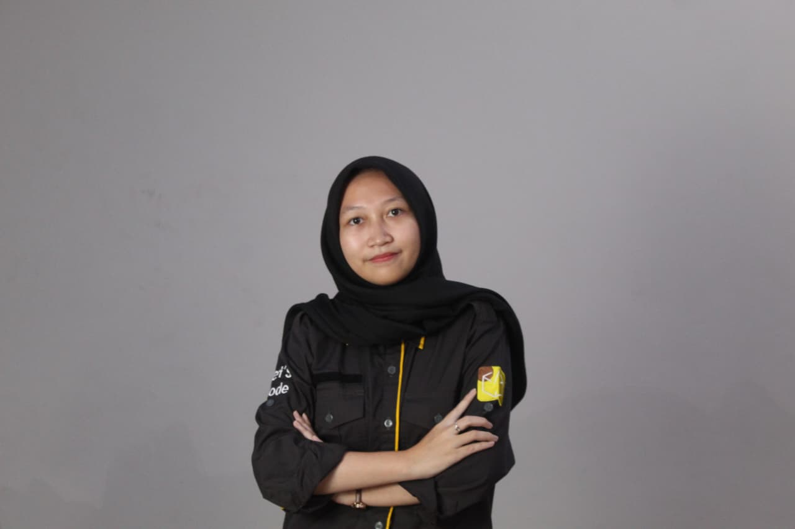

Selamat datang di portofolio saya! Saya adalah seorang pengembang web yang penuh semangat, disiplin, dan pekerja keras. Selain itu, saya juga memiliki pengalaman bekerja sebagai admin/data entry, di mana saya terbiasa mengelola, menginput, dan memastikan keakuratan data. Saya telah mengerjakan berbagai proyek yang membantu mengasah keterampilan teknis maupun ketelitian saya dalam bekerja.
"Di balik setiap ide hebat, ada keberanian untuk keluar dari batas dan imajinasi yang tak pernah berhenti. Dan berpikir berbeda adalah awal dari segala keajaiban. "
| Posisi | Perusahaan | Tahun |
|---|---|---|
| Staf Pendukung Administrasi | FIKES Universitas Sebelas April | Juni- Oktober 2023 |
| Data Entry | PK Keluarga Berencana Desa | Juli-September 2024 |
| Web Developer | PT. Tritunggal Swarna | Juni- September 2025 |